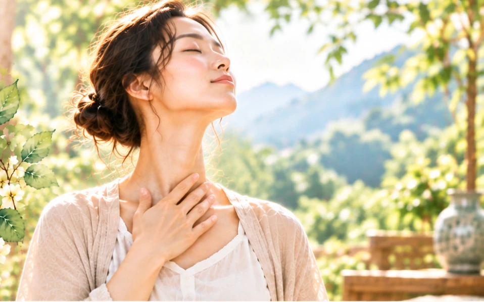

為甚麼要說「以鬆為養」呢？
這大概是我每次上課的時候，學員必問的題目之一。
答案其實相當簡單，因為身體的緊繃，心情的緊張，是每個人都弗學而能的，不必去學，天生就會，而且身心又彼此互相影響著，心情一旦緊張起來，身體就會連帶緊繃，平時若是沒有養的定，屆時未必能夠放的鬆，更何況會讓人產生緊張的時機，又都是人生的關鍵時刻，它往往化身一場比賽，一場表演，也有可能是一次考試，一次面試，它可以只是一次約會，一次會議，甚至是一個計畫，一個決定，重要的是，當關鍵時刻來臨的時候，我們成為自己希望的人，還是淪為自己討厭的那個人？
在做完「叩天鐘」之後，你會發現一個現象，那就是口水變多囉！
當口水增加的時候就可以緩緩吞下，這個動作就叫做「咽津」，說的白話一點的話就是吞口水。古聖認為口中津液是人體五臟的精華，長期吞服可以讓人身體強健、卻病延年，所以也叫做「玉泉」、「醴泉」、「玉漿」等，李時珍於本草綱目裡說到：「人舌下有四竅，兩竅通心，兩竅通腎氣，心氣流於舌下為靈液，道家語之金漿玉醴，溢為醴泉，聚為華池，散為津液，降為甘露，所以灌溉臟腑，潤澤肢體，故修養家咽津納氣，謂之清水灌靈根。」宋代文學家蘇東坡認為唾液「功用不可量，比之服藥，其效百倍」。
現代醫學認為唾液不僅能維持口腔的清潔，促進腸胃消化，幫助吸收功能，還能夠增強免疫機能，「活」這個字可拆解為「舌上的水」，看來古人老早就知道口水對身體的好處並且善加利用。
有些人比較容易口乾舌燥，這個時候就可以用「攪舌」或是「屈舌」的方式來協助增加唾液的分泌。
「攪舌」也稱做為「赤龍攪海」，方法就是用舌頭將整個口腔內的牙齒攪動一遍，先上後下，由左至右攪動數次，一般而言，我不建議將舌頭置於牙齒外攪動，因為舌頭很軟，而牙齒又硬，這種攪動方式很容易讓舌動產生不舒服的感覺。
「屈舌」就是舌上抵顎，只要將舌頭往上頂至上顎的位置，不久之後，唾液的分泌量自然就會變多了。
這二個都是相當快速而且相當有感的方式，不過我還有一個更快更簡單的方式，那就是將注意力放在玄膺一竅，此竅在舌下的位置，只要全神貫注在這個地方，口水很快就會分泌出來，每次上課只要一說到這裡，學員的頭鐵定如搗蒜般的點個不停。
看完這篇之後，還不立馬試試嗎！